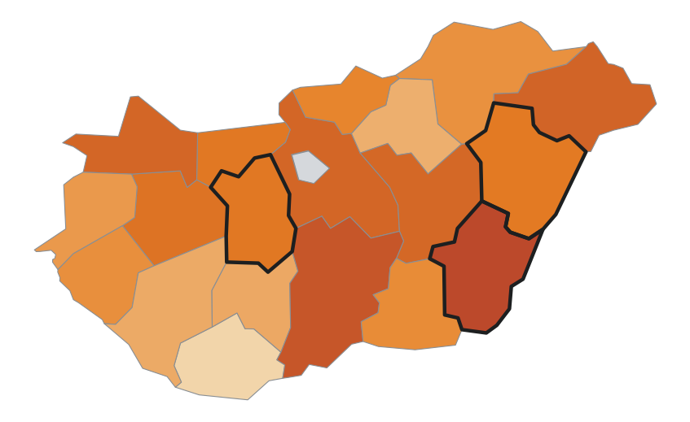
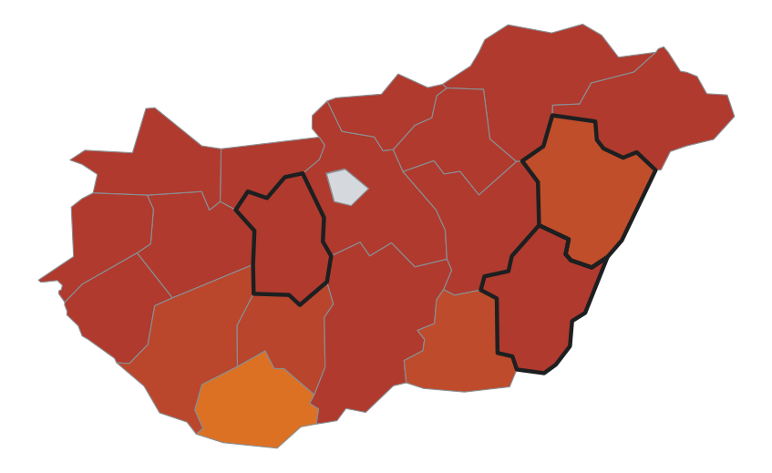
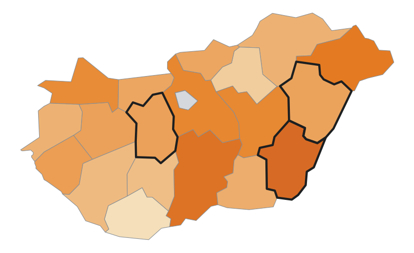
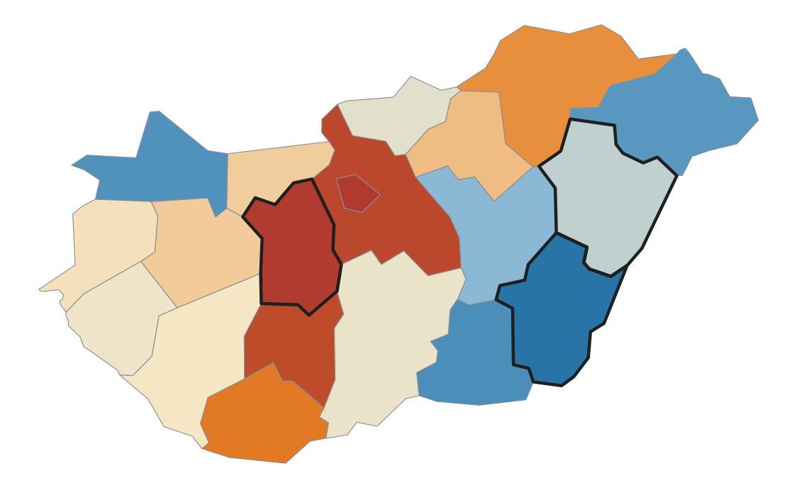

Ma a lényeg
A 2026. évi betakarítás a búza, kukorica és őszi árpa terményeknél 160 mrd Ft-tal marad el a szokásostól. Az őszi vetés kevés csapadékkal indul: a sokéves átlag 56%-a.
2026. évi betakarítás · lezárt szezonok
Mi húzta a 2026. évi termést? az időjárás hatása százalékpontban, a modell átlagos időjárás mellett várt szintjéhez mérve
Szélsőség: a szezon halmozott vízhiánya kívül esik a 2000 óta mért tartományon (eddigi szélsőérték: 2003).
2027. évi termésév · őszi vetés
Trendalapú termények – a sokéves trend, az idei időjárás figyelembevétele nélkül
Vármegyei statisztikai modell (KSH 2000-től, ERA5 időjárás). 2026. szeptemberi termelői áron és a legutóbbi lezárt évi területtel. EU-becslés: az Európai Bizottság havonta frissülő termésadata.
Területi kép



Fókusz-vármegyék – Békés · Hajdú-Bihar · Fejér
| Termény | Becslés | Eltérés (%) | Országostól (t/ha) | Eltérés a szokásostól |
|---|---|---|---|---|
| Békés | ||||
| búza | 4,71 t/ha | −17,7% | −0,47 | |
| kukorica | 4,47 t/ha | −35,3% | −0,88 | |
| őszi árpa | 5,18 t/ha | −12,7% | −0,42 | |
| Hajdú-Bihar | ||||
| búza | 5,31 t/ha | −10,6% | +0,13 | |
| kukorica | 6,47 t/ha | −16,8% | +1,12 | |
| őszi árpa | 5,68 t/ha | −6,5% | +0,08 | |
| Fejér | ||||
| búza | 5,57 t/ha | −10,8% | +0,39 | |
| kukorica | 5,11 t/ha | −32,2% | −0,24 | |
| őszi árpa | 6,20 t/ha | −6,7% | +0,60 | |
A sáv a szokásostól való eltérést mutatja ±20%-os skálán, a függőleges vonás a 0%. „Országostól”: eltérés az országos becsléstől.
Vetési időszak – búza és őszi árpa
A vetés óta (okt. 1–12.) országosan 11 mm csapadék esett, a sokéves átlag 56%-a. A vízmérleg −22 mm (a sokéves átlag −4 mm); a fókuszmegyékben 1–21 mm esett.
Fókusz-vármegyék – a vetés óta
| Vármegye | Csapadék | Vízmérleg | Hőösszeg |
|---|---|---|---|
| Békés | 21 mm | −13 mm | 192 |
| Hajdú-Bihar | 12 mm | −20 mm | 175 |
| Fejér | 1 mm | −32 mm | 170 |
Vízmérleg: csapadék mínusz párolgás. Hőösszeg: a napi középhőmérsékletek összege, 0 °C felett.
| Búza | Őszi árpa | |
|---|---|---|
| Leggyengébb év innen | 4,27 (2003) | 4,64 (2003) |
| Sokéves szint | 5,84 | 6,14 |
| Legerősebb év innen | 6,29 (2008) | 6,55 (2008) |
Hozambecslést a tavaszi fejlődés (bokrosodás) ismeretében közlünk; addig a tartomány a tájékozódást szolgálja.
Vízmérleg a vetés óta – vármegyénként −32 mm (piros) és −13 mm (kék) között · vastag keret: fókusz-vármegye

Módszertan. Vármegyei statisztikai modell a KSH 2000 óta mért hozamaiból és az ERA5 időjárásból. A 80%-os sáv és a tipikus tévedés (búza 7,6%, kukorica 19,1%, árpa 7,0%) a modell 2011 és 2025 közötti visszaméréséből származik. A termelési érték tájékoztató mutató, nem bevételi előrejelzés. Nem hivatalos adat. Részletek: prettyasap.github.io/wheat-forecast/magyarazat.html. Források: KSH, Open-Meteo (ERA5), Európai Bizottság (DG AGRI), MNB.
Piaci árjegyzések
| Termék | Jegyzés | Forintban | Egy év | 52 hetes sáv | Piac |
|---|---|---|---|---|---|
| Gabona és takarmány | |||||
| Étkezési búza | 200,78 EUR/t | 73 360 Ft/t | +5,9% | hazai, 3 régió átlaga | |
| Takarmánybúza | 203,31 EUR/t | 74 290 Ft/t | +6,8% | hazai, 2 régió átlaga | |
| Takarmánykukorica | 236,46 EUR/t | 86 400 Ft/t | +21,5% | hazai, 3 régió átlaga | |
| Takarmányárpa | 188,27 EUR/t | 68 790 Ft/t | +6,9% | hazai, csak Alföld | |
| Olajos termékek | |||||
| Napraforgómag (hagyományos) | 533,16 EUR/t | 194 810 Ft/t | +8,9% | hazai | |
| Napraforgómag (magas olajsavas) | 568,14 EUR/t | 207 590 Ft/t | +0,2% | hazai | |
| Repcemag | 546,68 EUR/t | 199 750 Ft/t | +8,1% | hazai | |
| Napraforgódara | 210,53 EUR/t | 76 920 Ft/t | −0,8% | hazai | |
| Repcedara | 260,15 EUR/t | 95 050 Ft/t | +4,6% | hazai | |
| Sertés | |||||
| Vágósertés (hasított, S oszt.) | 154,46 EUR/100 kg | 564 Ft/kg | −20,8% | hazai | |
| Vágósertés (hasított, E oszt.) | 154,39 EUR/100 kg | 564 Ft/kg | −19,6% | hazai | |
| Baromfi | |||||
| Egész csirke (65%-os) | 243,00 EUR/100 kg | 888 Ft/kg | −2,5% | hazai | |
| Csirkemell-filé | 509,17 EUR/100 kg | 1860 Ft/kg | −7,0% | hazai | |
| Csirkecomb | 216,69 EUR/100 kg | 792 Ft/kg | −9,5% | hazai | |
A jegyzésekről. Hazai heti termelői és feldolgozói árak; forrás: az Európai Bizottság (DG AGRI) adatszolgáltatása, a magyar adat az AKI PÁIR jelentése. Hivatalos napi árjegyzés nem létezik, minden sor a legutolsó kiadott hétről való. Forintérték: 365,38 Ft/EUR (MNB hivatalos középárfolyam, 2026. 10. 06.). Az 52 hetes sáv pontja az ár helye az elmúlt év mélypontja (bal) és csúcsa (jobb) között. Részletek: prettyasap.github.io/wheat-forecast/magyarazat.html.